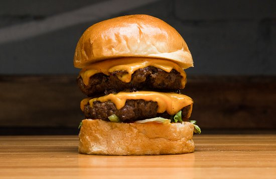

Cheese Buger

Hamburguesa doble con queso
Ingredientes:
500 g 2 1/3 tazas de carne molida baja en grasa
80 g 5 rebanadas de queso ¡Qué Rico! Americano cortadas cubos
30 g 2 cucharadas de Mayonesa
30 g 2 cucharadas de Mostaza
30 g 2 cucharadas de Kétchup MAGGI®
282 g 5 panes de hamburguesa
206 g 5 rodajas de tomate
Pasos
- En un tazón, combinar la carne molida con Naturísimo MAGGI® y marinar durante 5 minutos.
- Agregar el queso y combinar hasta integrar totalmente. Dividir la carne en 5 porciones, darle forma de hamburguesa y refrigerar hasta el momento de cocinar.
- Precalentar la parrilla o sartén a fuego medio durante 5 minutos.
- En un tazón, combinar vigorosamente la Mayonesa, Mostaza, el Kétchup MAGGI® y reservar en el refrigerador.
- Retirar las hamburguesas del refrigerador, colocar sobre la parrilla o sartén y cocinar durante por 10 minutos por cada lado o hasta que estén doradas.
- Abrir el pan, colocar una hamburguesa, 1 hoja de lechuga, 1 rodaja de tomate, 1 cucharada de aderezo y cerrar el pan.
- Servir y disfrutar.